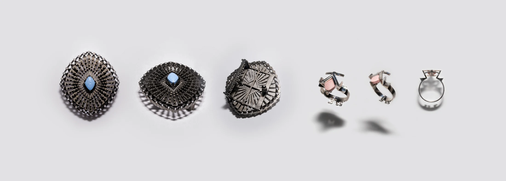
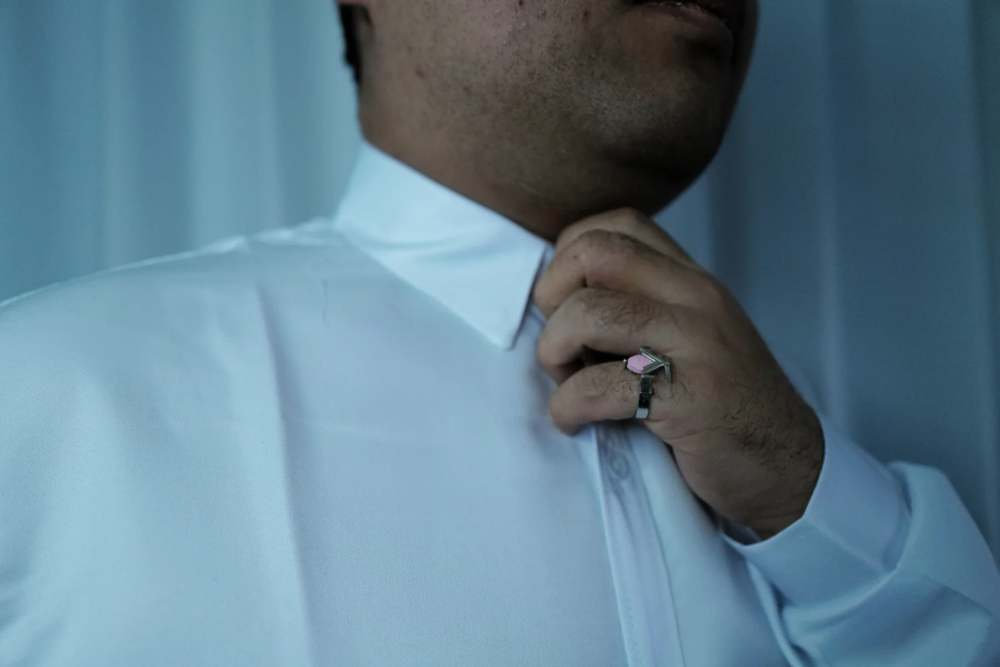

项目文件 / 象征性材料研究
03
人工合成钻
药片形态被重新放入宝石与首饰的语境中，用以追问价值、硬度、欲望与象征合法性的生成。


01-05
物件序列
-
01
总览
《人工合成钻石》将片剂形态视为替代性的宝石。作品把药物象征与首饰语言连接起来，观察价值如何通过镶嵌、展示、硬度和信念被生产。
-
02
片剂作为宝石
药物参照被放入首饰逻辑中。片剂形态不再只是医疗物，而成为一种替代石。
-
03
皮带扣
皮带扣将物件推向身体和公共展示。价值通过一个与固定和呈现相关的功能物被携带。
-
04
戒指
戒指格式将片剂参照集中到熟悉的首饰结构中，使物件停留在装饰、符号和材料问题之间。
-
05
象征性硬度
作品将硬度视为一种文化声明，而不只是物理属性。信念、展示和镶嵌共同生产物的价值。